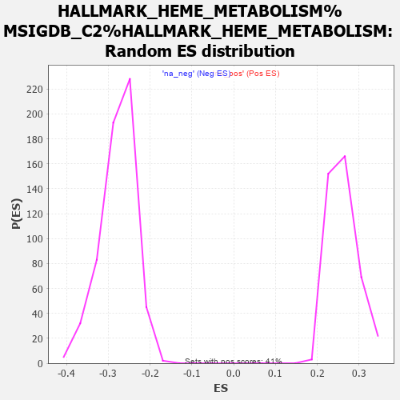

| | | Dataset | MBD2KO_pre.rnk |
| Phenotype | NoPhenotypeAvailable |
| Upregulated in class | na_pos |
| GeneSet | HALLMARK_HEME_METABOLISM%MSIGDB_C2%HALLMARK_HEME_METABOLISM |
| Enrichment Score (ES) | 0.7068404 |
| Normalized Enrichment Score (NES) | 2.6986442 |
| Nominal p-value | 0.0 |
| FDR q-value | 0.0 |
| FWER p-Value | 0.0 |
Table: GSEA Results Summary
 Fig 1: Enrichment plot: HALLMARK_HEME_METABOLISM%MSIGDB_C2%HALLMARK_HEME_METABOLISM
Fig 1: Enrichment plot: HALLMARK_HEME_METABOLISM%MSIGDB_C2%HALLMARK_HEME_METABOLISM
Profile of the Running ES Score & Positions of GeneSet Members on the Rank Ordered List
| PROBE | GENE SYMBOL | GENE_TITLE | RANK IN GENE LIST | RANK METRIC SCORE | RUNNING ES | CORE ENRICHMENT | | 1 | TRIM10 | | | 0 | 12.346 | 0.0260 | Yes |
| 2 | SLC4A1 | | | 1 | 11.944 | 0.0511 | Yes |
| 3 | SLC2A1 | | | 12 | 8.690 | 0.0686 | Yes |
| 4 | SNCA | | | 20 | 8.340 | 0.0857 | Yes |
| 5 | CPOX | | | 48 | 7.282 | 0.0991 | Yes |
| 6 | SLC25A37 | | | 51 | 7.248 | 0.1142 | Yes |
| 7 | TSPAN5 | | | 54 | 7.157 | 0.1291 | Yes |
| 8 | SELENBP1 | | | 70 | 6.845 | 0.1425 | Yes |
| 9 | PRDX2 | | | 84 | 6.569 | 0.1554 | Yes |
| 10 | GYPB | | | 90 | 6.466 | 0.1686 | Yes |
| 11 | SLC30A1 | | | 112 | 6.187 | 0.1801 | Yes |
| 12 | GYPA | | | 115 | 6.086 | 0.1928 | Yes |
| 13 | GLRX5 | | | 120 | 5.969 | 0.2051 | Yes |
| 14 | ACSL6 | | | 136 | 5.696 | 0.2160 | Yes |
| 15 | SLC30A10 | | | 140 | 5.676 | 0.2277 | Yes |
| 16 | ALAS2 | | | 151 | 5.573 | 0.2387 | Yes |
| 17 | UBAC1 | | | 198 | 5.024 | 0.2461 | Yes |
| 18 | OSBP2 | | | 210 | 4.935 | 0.2557 | Yes |
| 19 | MOCOS | | | 217 | 4.820 | 0.2654 | Yes |
| 20 | NFE2 | | | 220 | 4.763 | 0.2753 | Yes |
| 21 | BPGM | | | 224 | 4.732 | 0.2850 | Yes |
| 22 | RCL1 | | | 247 | 4.595 | 0.2931 | Yes |
| 23 | BLVRB | | | 250 | 4.575 | 0.3026 | Yes |
| 24 | HTRA2 | | | 257 | 4.543 | 0.3117 | Yes |
| 25 | ABCG2 | | | 259 | 4.529 | 0.3212 | Yes |
| 26 | HBZ | | | 262 | 4.487 | 0.3305 | Yes |
| 27 | KLF3 | | | 263 | 4.480 | 0.3399 | Yes |
| 28 | SMOX | | | 276 | 4.373 | 0.3482 | Yes |
| 29 | SLC22A4 | | | 279 | 4.356 | 0.3573 | Yes |
| 30 | MYL4 | | | 293 | 4.257 | 0.3653 | Yes |
| 31 | NCOA4 | | | 304 | 4.200 | 0.3734 | Yes |
| 32 | SPTA1 | | | 311 | 4.169 | 0.3818 | Yes |
| 33 | EPB42 | | | 326 | 4.048 | 0.3893 | Yes |
| 34 | NARF | | | 342 | 3.980 | 0.3966 | Yes |
| 35 | ABCB6 | | | 349 | 3.942 | 0.4045 | Yes |
| 36 | C3 | | | 350 | 3.920 | 0.4127 | Yes |
| 37 | RNF123 | | | 363 | 3.831 | 0.4199 | Yes |
| 38 | RHCE | | | 368 | 3.806 | 0.4277 | Yes |
| 39 | YPEL5 | | | 371 | 3.802 | 0.4355 | Yes |
| 40 | ACKR1 | | | 372 | 3.791 | 0.4435 | Yes |
| 41 | E2F2 | | | 374 | 3.790 | 0.4514 | Yes |
| 42 | RBM38 | | | 377 | 3.772 | 0.4592 | Yes |
| 43 | CLCN3 | | | 386 | 3.722 | 0.4664 | Yes |
| 44 | MPP1 | | | 398 | 3.653 | 0.4733 | Yes |
| 45 | CA2 | | | 429 | 3.491 | 0.4786 | Yes |
| 46 | UROD | | | 435 | 3.453 | 0.4855 | Yes |
| 47 | ADIPOR1 | | | 437 | 3.449 | 0.4927 | Yes |
| 48 | GYPE | | | 446 | 3.384 | 0.4992 | Yes |
| 49 | KAT2B | | | 450 | 3.373 | 0.5061 | Yes |
| 50 | ATG4A | | | 470 | 3.309 | 0.5117 | Yes |
| 51 | SPTB | | | 471 | 3.306 | 0.5187 | Yes |
| 52 | FOXO3 | | | 477 | 3.275 | 0.5252 | Yes |
| 53 | PICALM | | | 506 | 3.176 | 0.5299 | Yes |
| 54 | TRAK2 | | | 510 | 3.168 | 0.5364 | Yes |
| 55 | MXI1 | | | 511 | 3.167 | 0.5430 | Yes |
| 56 | HAGH | | | 540 | 3.089 | 0.5476 | Yes |
| 57 | AHSP | | | 553 | 3.054 | 0.5532 | Yes |
| 58 | KDM7A | | | 574 | 2.976 | 0.5580 | Yes |
| 59 | AQP3 | | | 579 | 2.952 | 0.5639 | Yes |
| 60 | DMTN | | | 581 | 2.937 | 0.5700 | Yes |
| 61 | MAP2K3 | | | 583 | 2.933 | 0.5761 | Yes |
| 62 | HMBS | | | 584 | 2.933 | 0.5823 | Yes |
| 63 | SLC6A9 | | | 628 | 2.819 | 0.5852 | Yes |
| 64 | CCND3 | | | 650 | 2.760 | 0.5895 | Yes |
| 65 | CTNS | | | 651 | 2.757 | 0.5953 | Yes |
| 66 | PPP2R5B | | | 661 | 2.721 | 0.6004 | Yes |
| 67 | RANBP10 | | | 683 | 2.675 | 0.6046 | Yes |
| 68 | ERMAP | | | 686 | 2.673 | 0.6101 | Yes |
| 69 | RAP1GAP | | | 688 | 2.661 | 0.6156 | Yes |
| 70 | RHD | | | 727 | 2.568 | 0.6183 | Yes |
| 71 | DCAF11 | | | 729 | 2.561 | 0.6236 | Yes |
| 72 | UROS | | | 730 | 2.561 | 0.6290 | Yes |
| 73 | SLC6A8 | | | 745 | 2.522 | 0.6333 | Yes |
| 74 | GAPVD1 | | | 802 | 2.383 | 0.6344 | Yes |
| 75 | TSPO2 | | | 804 | 2.379 | 0.6393 | Yes |
| 76 | ADD2 | | | 832 | 2.336 | 0.6424 | Yes |
| 77 | BACH1 | | | 860 | 2.272 | 0.6452 | Yes |
| 78 | MARK3 | | | 888 | 2.227 | 0.6480 | Yes |
| 79 | XK | | | 901 | 2.198 | 0.6518 | Yes |
| 80 | NUDT4 | | | 948 | 2.139 | 0.6531 | Yes |
| 81 | DAAM1 | | | 953 | 2.134 | 0.6573 | Yes |
| 82 | PIGQ | | | 976 | 2.109 | 0.6602 | Yes |
| 83 | UCP2 | | | 980 | 2.104 | 0.6644 | Yes |
| 84 | SLC11A2 | | | 983 | 2.104 | 0.6687 | Yes |
| 85 | CAT | | | 1011 | 2.056 | 0.6711 | Yes |
| 86 | FBXO34 | | | 1015 | 2.055 | 0.6752 | Yes |
| 87 | BSG | | | 1058 | 2.021 | 0.6765 | Yes |
| 88 | GCLC | | | 1059 | 2.021 | 0.6808 | Yes |
| 89 | CTSE | | | 1079 | 1.993 | 0.6836 | Yes |
| 90 | FTCD | | | 1105 | 1.961 | 0.6860 | Yes |
| 91 | KLF1 | | | 1106 | 1.961 | 0.6901 | Yes |
| 92 | TAL1 | | | 1137 | 1.916 | 0.6920 | Yes |
| 93 | FECH | | | 1197 | 1.851 | 0.6918 | Yes |
| 94 | CTSB | | | 1201 | 1.846 | 0.6955 | Yes |
| 95 | NFE2L1 | | | 1208 | 1.836 | 0.6989 | Yes |
| 96 | TOP1 | | | 1214 | 1.831 | 0.7024 | Yes |
| 97 | EPOR | | | 1297 | 1.755 | 0.7003 | Yes |
| 98 | GYPC | | | 1338 | 1.727 | 0.7012 | Yes |
| 99 | HBQ1 | | | 1402 | 1.661 | 0.7002 | Yes |
| 100 | HDGF | | | 1428 | 1.641 | 0.7019 | Yes |
| 101 | BTG2 | | | 1549 | 1.538 | 0.6967 | Yes |
| 102 | AGPAT4 | | | 1554 | 1.534 | 0.6997 | Yes |
| 103 | PDZK1IP1 | | | 1560 | 1.531 | 0.7025 | Yes |
| 104 | GATA1 | | | 1617 | 1.481 | 0.7017 | Yes |
| 105 | SLC10A3 | | | 1628 | 1.468 | 0.7041 | Yes |
| 106 | ELL2 | | | 1634 | 1.464 | 0.7068 | Yes |
| 107 | GCLM | | | 1753 | 1.385 | 0.7015 | No |
| 108 | MGST3 | | | 1864 | 1.318 | 0.6965 | No |
| 109 | HTATIP2 | | | 1956 | 1.263 | 0.6928 | No |
| 110 | RAD23A | | | 1963 | 1.255 | 0.6950 | No |
| 111 | HBD | | | 1985 | 1.241 | 0.6961 | No |
| 112 | LMO2 | | | 2014 | 1.228 | 0.6968 | No |
| 113 | EPB41 | | | 2049 | 1.201 | 0.6969 | No |
| 114 | KEL | | | 2089 | 1.178 | 0.6966 | No |
| 115 | ISCA1 | | | 2322 | 1.059 | 0.6826 | No |
| 116 | MOSPD1 | | | 2345 | 1.050 | 0.6833 | No |
| 117 | OPTN | | | 2383 | 1.031 | 0.6828 | No |
| 118 | ADD1 | | | 2449 | 1.001 | 0.6804 | No |
| 119 | EIF2AK1 | | | 2524 | 0.968 | 0.6772 | No |
| 120 | DCUN1D1 | | | 2535 | 0.965 | 0.6785 | No |
| 121 | KHNYN | | | 2575 | 0.948 | 0.6778 | No |
| 122 | ANK1 | | | 2768 | 0.870 | 0.6661 | No |
| 123 | SLC7A11 | | | 2923 | 0.815 | 0.6570 | No |
| 124 | MFHAS1 | | | 3141 | 0.741 | 0.6434 | No |
| 125 | USP15 | | | 3158 | 0.738 | 0.6438 | No |
| 126 | CDR2 | | | 3320 | 0.682 | 0.6339 | No |
| 127 | RHAG | | | 3394 | 0.660 | 0.6302 | No |
| 128 | TNS1 | | | 3408 | 0.656 | 0.6307 | No |
| 129 | SLC25A38 | | | 3409 | 0.656 | 0.6320 | No |
| 130 | SIDT2 | | | 3411 | 0.655 | 0.6334 | No |
| 131 | PPOX | | | 3419 | 0.651 | 0.6342 | No |
| 132 | CDC27 | | | 3731 | 0.562 | 0.6136 | No |
| 133 | SEC14L1 | | | 3774 | 0.550 | 0.6118 | No |
| 134 | TFRC | | | 3839 | 0.533 | 0.6084 | No |
| 135 | PSMD9 | | | 4172 | 0.445 | 0.5861 | No |
| 136 | MKRN1 | | | 4616 | 0.338 | 0.5557 | No |
| 137 | HBB | | | 5074 | 0.253 | 0.5241 | No |
| 138 | CLIC2 | | | 5156 | 0.238 | 0.5189 | No |
| 139 | ATP6V0A1 | | | 5209 | 0.230 | 0.5158 | No |
| 140 | FBXO7 | | | 5225 | 0.227 | 0.5152 | No |
| 141 | TRIM58 | | | 5381 | 0.201 | 0.5047 | No |
| 142 | FOXJ2 | | | 5727 | 0.142 | 0.4808 | No |
| 143 | EZH1 | | | 5918 | 0.113 | 0.4677 | No |
| 144 | TMCC2 | | | 6082 | 0.093 | 0.4565 | No |
| 145 | P4HA2 | | | 6088 | 0.092 | 0.4563 | No |
| 146 | FBXO9 | | | 6161 | 0.082 | 0.4515 | No |
| 147 | PGLS | | | 6352 | 0.056 | 0.4382 | No |
| 148 | IGSF3 | | | 6704 | 0.017 | 0.4136 | No |
| 149 | TNRC6B | | | 7580 | -0.089 | 0.3524 | No |
| 150 | ACP5 | | | 7859 | -0.128 | 0.3332 | No |
| 151 | LRP10 | | | 8141 | -0.164 | 0.3138 | No |
| 152 | FN3K | | | 9065 | -0.310 | 0.2497 | No |
| 153 | BLVRA | | | 9092 | -0.315 | 0.2485 | No |
| 154 | PC | | | 9163 | -0.327 | 0.2443 | No |
| 155 | ASNS | | | 9184 | -0.330 | 0.2436 | No |
| 156 | GMPS | | | 9394 | -0.367 | 0.2297 | No |
| 157 | RNF19A | | | 9429 | -0.372 | 0.2281 | No |
| 158 | ARL2BP | | | 9810 | -0.449 | 0.2023 | No |
| 159 | TCEA1 | | | 9915 | -0.471 | 0.1960 | No |
| 160 | VEZF1 | | | 10614 | -0.636 | 0.1484 | No |
| 161 | XPO7 | | | 10762 | -0.677 | 0.1395 | No |
| 162 | GDE1 | | | 10853 | -0.703 | 0.1346 | No |
| 163 | CCDC28A | | | 10908 | -0.719 | 0.1324 | No |
| 164 | ALAD | | | 11248 | -0.827 | 0.1103 | No |
| 165 | SYNJ1 | | | 11356 | -0.863 | 0.1046 | No |
| 166 | RBM5 | | | 11444 | -0.900 | 0.1004 | No |
| 167 | ALDH6A1 | | | 11575 | -0.950 | 0.0933 | No |
| 168 | CAST | | | 11735 | -1.015 | 0.0842 | No |
| 169 | TFDP2 | | | 11818 | -1.052 | 0.0807 | No |
| 170 | CIR1 | | | 11861 | -1.074 | 0.0800 | No |
| 171 | ENDOD1 | | | 12424 | -1.363 | 0.0434 | No |
| 172 | BNIP3L | | | 12507 | -1.408 | 0.0406 | No |
| 173 | CA1 | | | 12566 | -1.453 | 0.0396 | No |
| 174 | MINPP1 | | | 12733 | -1.567 | 0.0313 | No |
| 175 | TMEM9B | | | 13095 | -1.927 | 0.0100 | No |
| 176 | NNT | | | 13098 | -1.929 | 0.0139 | No |
| 177 | LAMP2 | | | 13366 | -2.245 | -0.0001 | No |
| 178 | ARHGEF12 | | | 13474 | -2.400 | -0.0026 | No |
| 179 | SDCBP | | | 13481 | -2.412 | 0.0021 | No |
| 180 | NEK7 | | | 13530 | -2.474 | 0.0039 | No |
| 181 | BMP2K | | | 13535 | -2.480 | 0.0088 | No |
| 182 | DCAF10 | | | 13611 | -2.641 | 0.0091 | No |
| 183 | BTRC | | | 13712 | -2.879 | 0.0082 | No |
| 184 | NR3C1 | | | 13878 | -3.316 | 0.0036 | No |
| 185 | LPIN2 | | | 13937 | -3.526 | 0.0069 | No |
| 186 | MBOAT2 | | | 14090 | -4.176 | 0.0050 | No |
| 187 | RIOK3 | | | 14139 | -4.398 | 0.0109 | No |
| 188 | HEBP1 | | | 14179 | -4.668 | 0.0180 | No |
Table: GSEA details [plain text format]

Fig 2: HALLMARK_HEME_METABOLISM%MSIGDB_C2%HALLMARK_HEME_METABOLISM: Random ES distribution
Gene set null distribution of ES for HALLMARK_HEME_METABOLISM%MSIGDB_C2%HALLMARK_HEME_METABOLISM